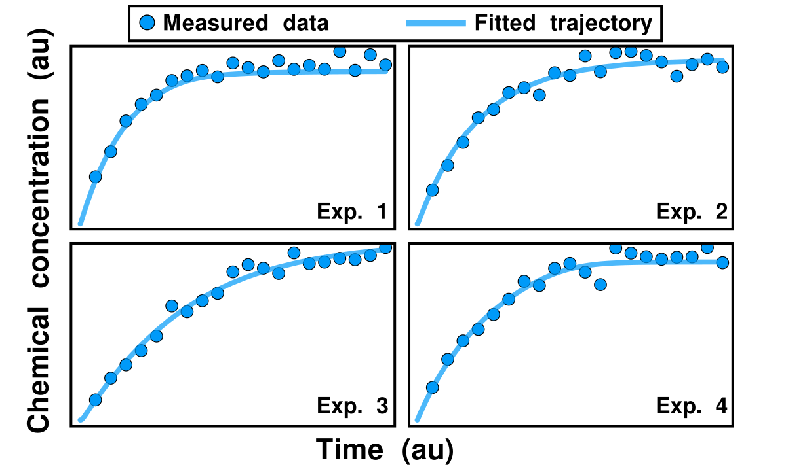
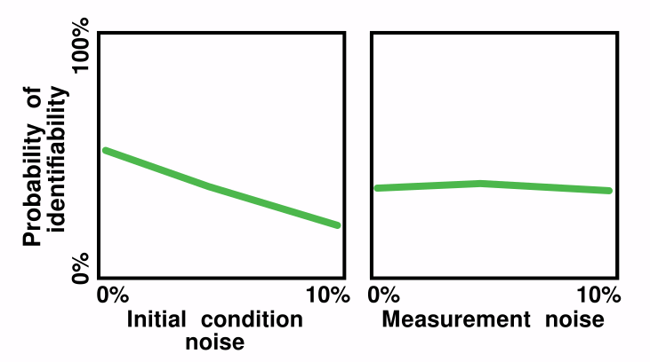

Torkel's research
Time-lapse fluorescent microscopy enables single-cell measurements
Here we measure σV (stress response protein in Bacillus subtilis).
σV responds through a heterogeneous activation behaviour
The time to activation is heterogeneous across an isogenic population. Heterogeneity is likely caused by intrinsic molecular noise.
We use experiments + model prediction/validation steps to study σV (and other sigma factors)
Validated models (here stochastic differential equations)can be used to study system dynamics.
We also study general stress response factor σB
It can exhibit a stochastic pulsing response.
Central question of systems biology: How do biological networks generate dynamic behaviours?
(σV and σB networks, "for show")
Both the σV and σB circuits contain a mixed positive/negative feedback loop
Can this motif explain the two distinct response behaviours?
We model a mixed positive/negative feedback loop
The negative feedback is subject to a time delay.
System noise is accounted for by through stochastic simulations.
The model depends on only three parameters:
- S: The strength of the self-activation loop.
- D: The strength of the self-deactivation loop.
- τ: The length of the self-deactivation delay.
The system's behaviour is determined by these three properties.
(Three additional parameters exist, but are omitted in this presentation)
For a given stress input, the model output corresponding sigma factor activity
Noise is implemented through the chemical Langevin equations.
For every parameter set, we get a specific response behaviour
Here we can recreate the behaviours of both the σV and σB systems.
We have found all the possible response behaviours of the system
(We use an automated algorithm to classify a parameter set)
We can map these behaviours across parameter space
(τ = length of self-deactivation delay)
We can map these behaviours across parameter space
(τ = length of self-deactivation delay)
We can map these behaviours across parameter space
(D = strength of self-deactivation, τ = length of self-deactivation delay)
We can map these behaviours across parameter space

(S = strength of self-activation, D = strength of self-deactivation, τ = length of self-deactivation delay)
We can map these behaviours across parameter space
(S = strength of self-activation, D = strength of self-deactivation, τ = length of self-deactivation delay)
We can map these behaviours across parameter space
(S = strength of self-activation, D = strength of self-deactivation, τ = length of self-deactivation delay)
We can map these behaviours across parameter space
(S = strength of self-activation, D = strength of self-deactivation, τ = length of self-deactivation delay)
We can map these behaviours across parameter space
(S = strength of self-activation, D = strength of self-deactivation, τ = length of self-deactivation delay)
We can map these behaviours across parameter space
(S = strength of self-activation, D = strength of self-deactivation, τ = length of self-deactivation delay)
We can map these behaviours across parameter space
(S = strength of self-activation, D = strength of self-deactivation, τ = length of self-deactivation delay)
We can map these behaviours across parameter space
(S = strength of self-activation, D = strength of self-deactivation, τ = length of self-deactivation delay)
We can place real systems on our map
This makes predictions on their system properties.
The model predicts a behavioural transition as a parameter is varied
This transition should be observable in the σB system (which contains stochastic pulsing).
We can modulate the parameter S in a real circuit
This confirms that σB undergoes the predicted transition.
Here, IPTG levels corresponds to S. For each level of IPTG, three repeated experiments are shown.
We can classify model and experiment behaviours as S is varied
A similar transition occurs in both systems.
We can validate other transition (using σV as base)

We can even vary S and D simultaneously.
(By adding 15 additional anti-σV genes to the bacteria!)
Sigma factors are used as regulators in synthetic biology.We describe how to tune your regulator to achieve desired behaviours.
But how do we actually model these systems?
The chemical Langevin equation requires one term for each reaction.
However, all information is encoded in a small number of reactions.
What if we could implement models in this form?
This is the idea behind the Catalyst.jl software.
Next step: Make simulations fast
Catalyst offers a big speed-up when compared to alternatives.
Examples of additional Catalyst features
A recent addition: spatial modelling
We have implemented both deterministic and stochastic solvers
(Videos looped)
We have also worked on data-drive modelling tools
PEtab.jl supports parameter fitting for Catalyst models.
We have high-performance methods for CRN simulation, but what should we do with them?
We investigate (parameter identifiability) in catalysis chain networks.
Catalysis chain networks are used in chemical synthesis
Finding their parameters is required to optimise chemical production pipelines.
Parameters are fitted from data

Practically, experiments are carried out using various initial conditions. Next, parameters are found that enable simulations to replicate the data.
Parameter identifiability problems common
Profile likelihood analysis can be used to determine identifiability.
We produce synthetic data for various experimental conditions
Next, parameter identifiability is determined across a 6-dimensional experiment space.
For each setting, we determine fraction of parameter identifiability

Example analysis: Here we show that initial condition noise is more problematic than measurement noise.
We can fit parameters, but what is next?
Catalysis chain network typically contains unknown reactions.
Is it possible to discovery these reactions from data?

I.e. to perform model discovery.
Methods for model discovery exists

However, model discovery identifiability is less studied.
Thanks to my research groups
Thank you
Stochastic pulsing behaviour over time and in phase space